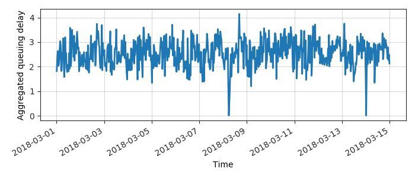
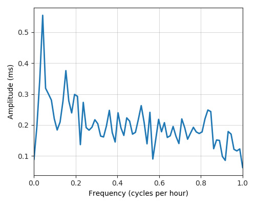
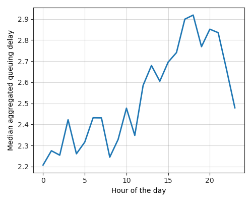
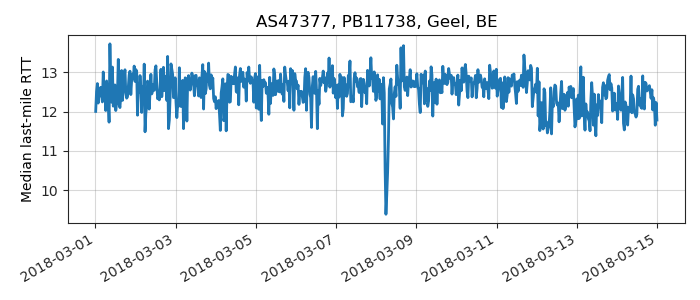
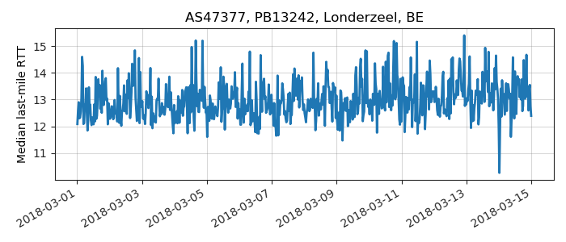
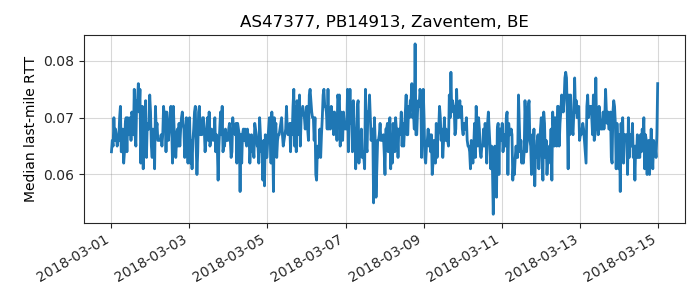

---
layout: default
title: Last-mile delay survey / 2018-03-01 / AS47377
---
AS47377, ORANGE_BELGIUM_SA KPN Belgium Business NV has been acquired by Mobistar, BE
Summary
- Daily last-mile fluctuations: low
- Number of probes: 4
- APNIC eyeball rank: 426
- Daily fluctuations: True
- Main frequency: 0.0417
- Average peak-to-peak amplitude: 0.55ms
Aggregated last-mile queuing delay

Periodogram

24H profile

Probes' last-mile RTT
- 

- 
- 